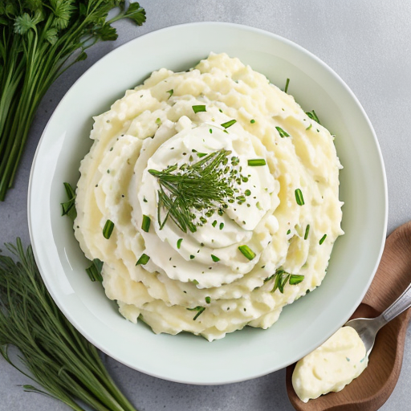

Mashed Potatoes with Garlic and Chives

Savor Creamy Mashed Potatoes with Garlic and Chives: A delectable side dish featuring velvety potatoes blended with minced garlic, fresh chives, and a hint of buttery richness. Perfect for any occasion, this recipe delivers smooth, flavorful mashed potatoes that pair beautifully with a variety of main dishes. A must-try comfort classic.
Ingredients:
- • 2 pounds of potatoes (e.g., Yukon Gold), peeled and cubed
- • 4 cloves of garlic, minced
- • 1/2 cup milk (whole or 2%)
- • 4 tablespoons unsalted butter
- • Salt and pepper to taste
- • 2 tablespoons fresh chives, chopped
Instructions:
- Place the peeled and cubed potatoes in a large pot of salted water. Bring to a boil and cook for about 15-20 minutes or until the potatoes are fork-tender.
- While the potatoes are cooking, heat the milk, minced garlic, and butter in a small saucepan over low heat. Heat until the butter is melted and the mixture is warm.
- Drain the cooked potatoes and return them to the pot. Mash them with a potato masher or a hand mixer.
- Gradually pour the warm milk and garlic mixture into the mashed potatoes, stirring until smooth and creamy. Add more milk if needed to reach your desired consistency.
- Season with salt and pepper to taste and stir in the chopped fresh chives.
- Serve hot, garnished with extra chives and a pat of butter if desired.